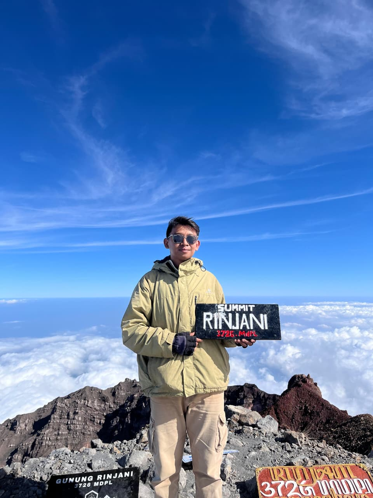
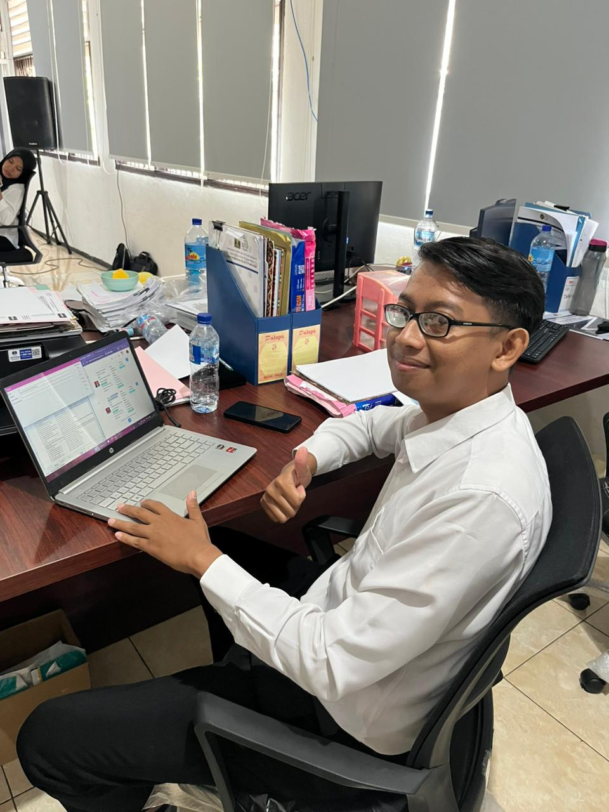
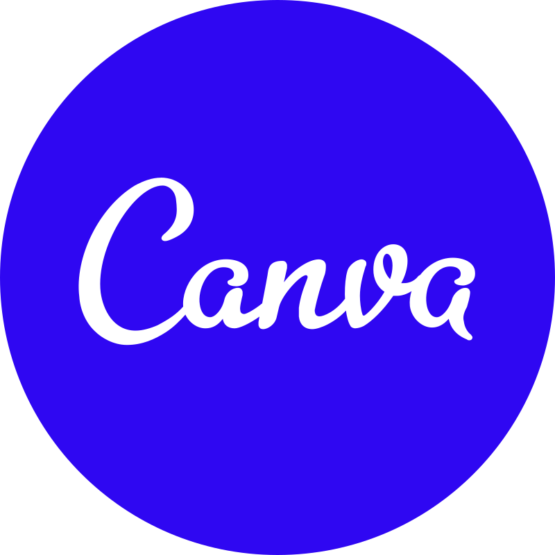

DOC · 01
Microsoft Excel
Pengolahan data, rekap, dan tabulasi laporan administrasi.

RINJANI · 3726 MDPLTenaga Administrasi & Pengelolaan Fasilitas

Lulusan Pendidikan Guru Sekolah Dasar, Universitas Mataram.
Saya memiliki kemampuan komunikasi yang baik dan terbiasa bekerja dalam tim. Saat ini aktif mengelola dan memastikan fasilitas kantor berfungsi dengan baik, mulai dari pemeliharaan hingga penanganan keluhan pengguna — pekerjaan yang menuntut ketelitian, tanggung jawab, dan inisiatif yang sama seperti saat saya menyusun rencana pendakian ke puncak tertinggi.
Siap memberikan kontribusi terbaik untuk mendukung kinerja dan layanan di lingkungan kerja.
Ditata seperti berkas kerja — rapi, terdokumentasi, dan siap dipakai kapan saja.
Pengolahan data, rekap, dan tabulasi laporan administrasi.
Penyusunan surat, laporan, dan dokumen kedinasan.

Desain materi informasi, poster, dan publikasi sederhana.
Penyuntingan video dokumentasi kegiatan dan konten promosi.
Menyusun prioritas kerja agar tugas selesai tepat waktu.
Bekerja sama lintas tim untuk mendukung kelancaran layanan.
Jejak kerja dan kegiatan, disusun seperti arsip surat kedinasan.
Terbuka untuk peluang kerja maupun sekadar berkenalan. Silakan hubungi melalui: